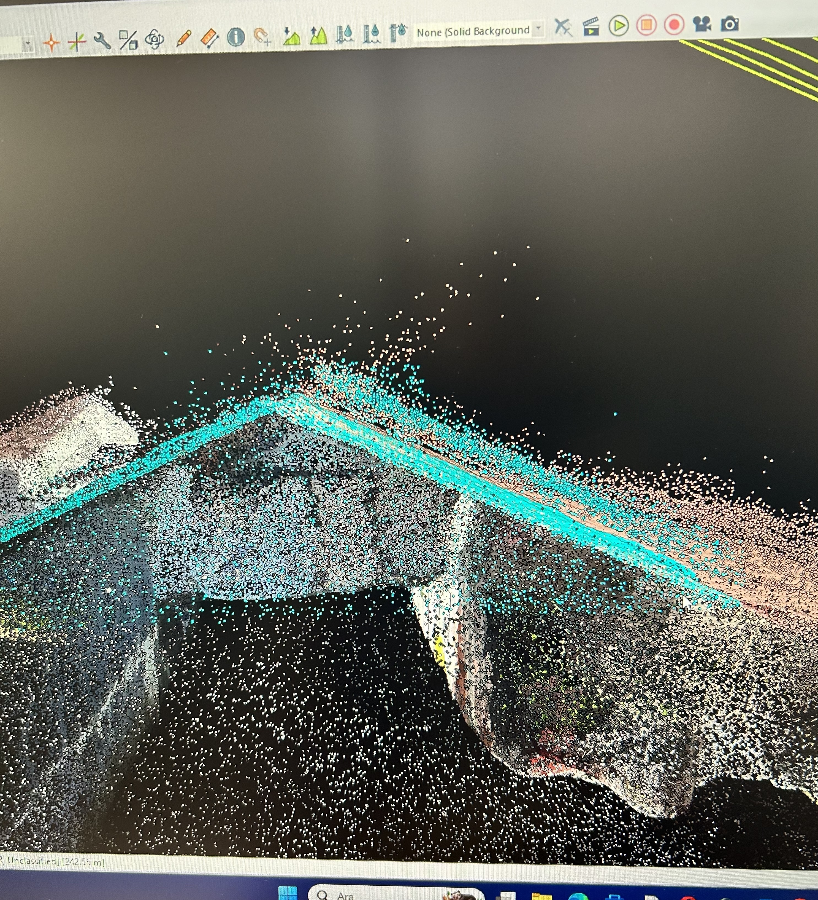
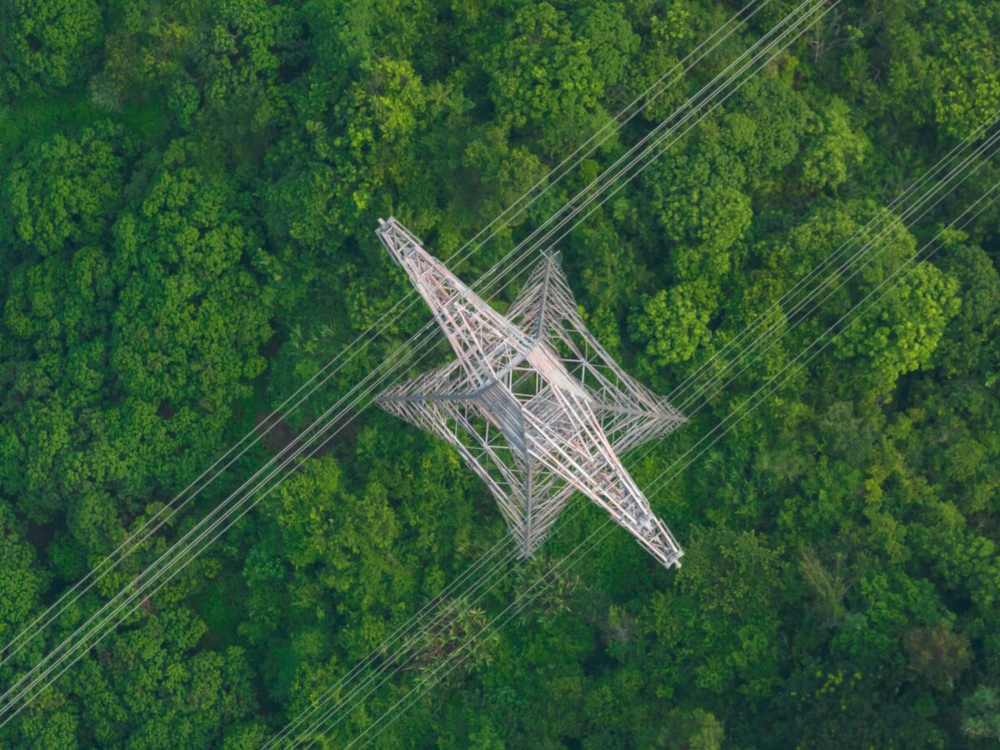
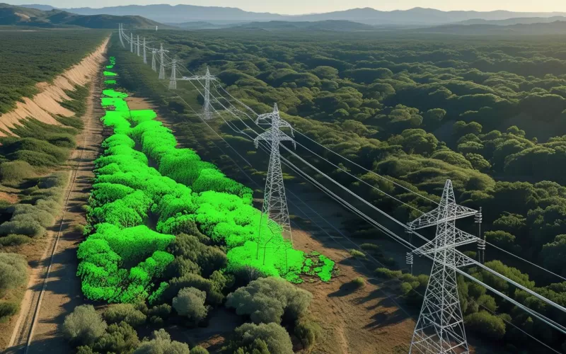
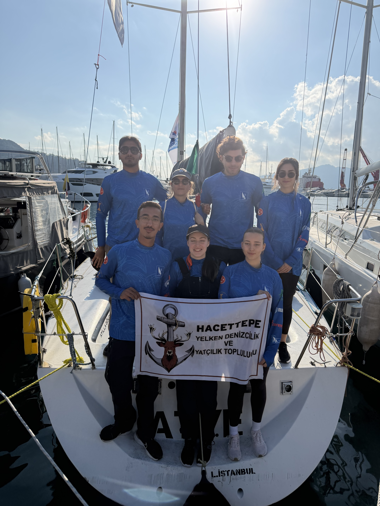
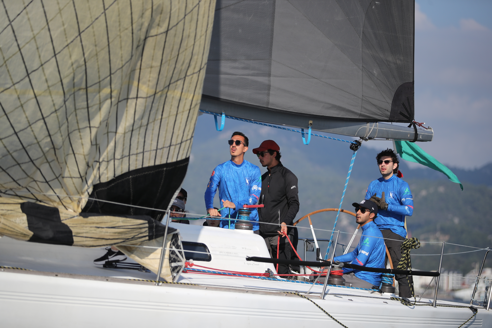
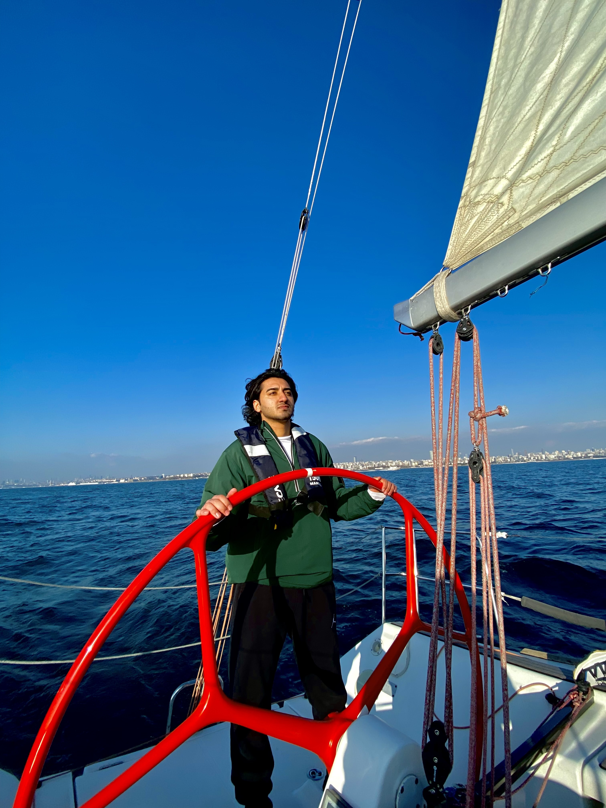

Can Dağdeviren is a geomatics engineering student at Hacettepe University. He works with LiDAR, orthophotos and web maps, and when he is not in front of a screen, he is out on the water sailing.
Here you will find his GIS and remote sensing work, two web maps, and a little about life on a sailing boat.
2026–2027, Graduation project (in progress)
Conjunction Data Message Analysis Portal

2026, ELTEMTEK
LiDAR Point Cloud Processing

2026, ELTEMTEK
Orthophoto Production

2026, ELTEMTEK
Transmission Line Violation Analysis

On the water



[Write a few sentences about your sailing: where you sail, your club or boat, races you have taken part in.]

Background
Between March and August 2026 I worked in the GIS unit at ELTEMTEK, processing LiDAR point clouds, producing orthophotos and analysing violations along energy transmission lines.
Interests
GIS, remote sensing, LiDAR, photogrammetry, GNSS and Web GIS.
Contact
Email: candagdeviren@hacettepe.edu.tr
GitHub: github.com/candagdeviren